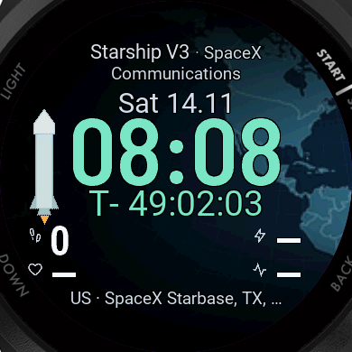
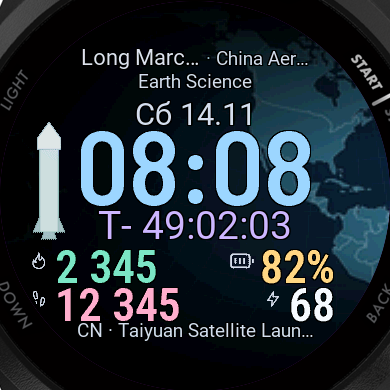

SpaceFox simulator preview
English and Russian candidate captures from the native FR165 simulator. These are existing observations, not physical-device or Store acceptance.


English and Russian candidate captures from the native FR165 simulator. These are existing observations, not physical-device or Store acceptance.

